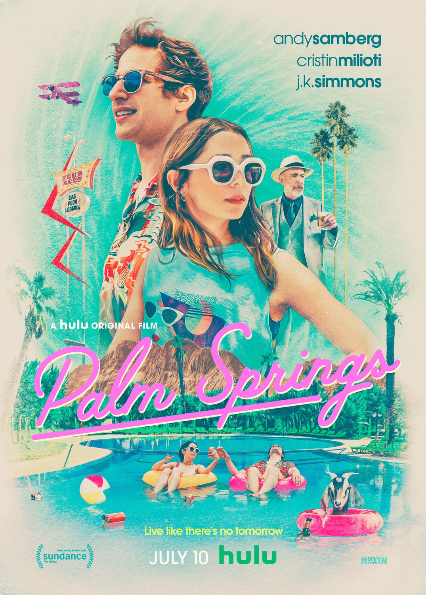

|  | Palm Springs
Direção: Max Barbakow
Roteiro Andy Siara
Elenco: Andy Samberg, Cristin Milioti, J.K. Simmons
Nyles é um homem relaxado e sem preocupações. Quando em um casamento em Palm Springs ele conhece Sarah, a relutante madrinha do casamento, ele se vê incapacitado de deixá-la ou deixar o local. |
|
Acesse mais em YouTube SESSÕES
|